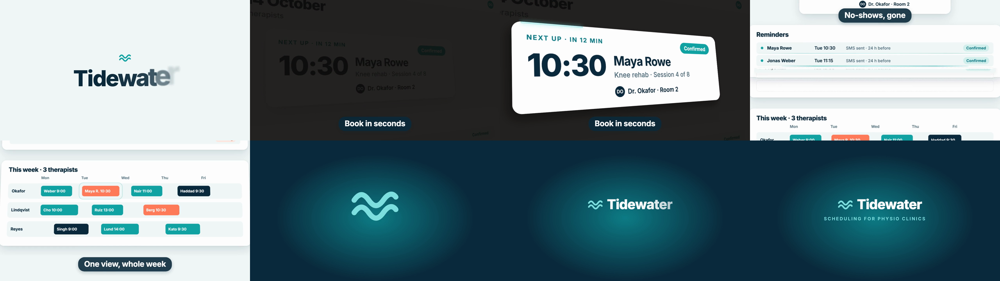

Output

Result
Delivered a real 6.0 s, 1280x720, 30 fps H.264 + AAC MP4 (1.3 MB) rendered with 'npx remotion render' (authored on the skill's native 1920x1080 canvas and rendered at --scale=0.6666666666666666 to get 1280x720). The skill has three modes and none was chosen, so I ran the autonomous free-creation pipeline (it can't ask in this unattended run). Because Tidewater has no real product, I built a fictional Tidewater schedule page as HTML (fictional patients), took the skill's capture step on it (puppeteer-core + installed Chrome: full-page 2x texture + layout.json) and then did the film as one continuous PageCam 2.5D camera over that real screenshot: brand open (brand-ink-open, adapted: wave mark draw-on, per-letter letterpress), hero card spotlight (spotlight-hero-card, compressed from 172 to about 40 frames: lights down, side-on push, 12-frame overshoot rise, beam lap, reseat), reminder rows embedding (row-embed, same flight and teal seam mechanics, 4 rows), a glide to the week view with one ring pulse on the booked slot, and an outro lockup (logo-shrink-wordmark-lockup, compressed: mark shrinks with a 6 percent brake, shifts left, letters slide in, tagline). Brand motion tokens come from the skill's 'calm care' preset and the product's own palette and Inter. Captions are 60 px (about 5.5 percent of frame height). Eight SFX from the skill's own library are pinned in a declarative table relative to the timeline. Deviations, all forced by 6 s: card timings compressed, spotlight light pool, volumetric beam and 3D annotation left out, wordmark open holds under 1 s (outro holds about 30 frames), no BGM so no BGM/no-BGM pair. Verification: stills with 'remotion render --frames' at every beat, ffprobe, volumedetect (max -6.1 dB), and the skill's required independent review by a separate Sonnet agent; it found a caption/content collision, row-embed patch artifacts, SFX peaks lagging the visuals and glint fragments; I moved the middle caption to the top, tightened the patches, retimed six SFX pins to the measured peaks and removed the glints. Not fixed: a faint ghost of a row during its flight at frame 86, the clipped page text at the left edge during the push, and the lockup slightly off-centre; the independent review was not repeated after the fixes. The skill's audio files carry mixed Mixkit provenance (some not traceable), noted for commercial use.
Terminal
# Mode is not specified by the prompt, so autonomous free creation (pipeline.md) was chosen; Ink Press template not used
gh api repos/Vincentwei1021/video-shotcraft/contents/SKILL.md ... (then references/pipeline.md, aesthetic-rules.md, sound-design.md, final-review.md, shots/{brand-ink-open,spotlight-hero-card,row-embed,logo-shrink-wordmark-lockup}.md, demos BrandInkOpen.tsx + RowEmbed.tsx, assets/lib/PageCam.tsx)
SKILL.md 276 lines; pipeline.md 25 kB; aesthetic-rules.md 27 kB; ... all fetched
# Project scaffold (skill points to create-video; Remotion 4.0.537)
npx create-video@latest --yes --blank --no-tailwind shot && npx remotion add @remotion/google-fonts @remotion/media @remotion/layout-utils
+ @remotion/google-fonts@4.0.537
+ @remotion/media@4.0.537
+ @remotion/layout-utils@4.0.537
# Stage 4: real-page capture. Full-page 2x texture plus layout.json; the page is a fictional Tidewater schedule app with invented patients
node capture.mjs http://localhost:7155/index.html # adapted capture-template.mjs, puppeteer-core + Google Chrome
{"pageH":1820,"rows":[{"x":208,"y":790,"w":1504,"h":72},...],"hero":{"x":480,"y":290,"w":960,"h":320},"rem":{...},"week":{...},"booked":{"x":684,"y":1376,"w":240,"h":68}}
public/textures/live/schedule-full.png: PNG image data, 3840 x 3640
# Stage 6: SFX come from the skill's own library; volumes set from measured peaks (all near 0 dB, so 0.28-0.55)
gh api .../assets/audio/sfx/{transition,impact,light}/*.mp3 > public/audio/*.mp3 && ffmpeg -i X.mp3 -af volumedetect
transition-soft max -0.9 dB; whoosh-fast -1.3; whoosh-big -1.5; sparkle-touch -2.2; transition-snap -4.0; hit-weak -5.6; impact-zoom-quick -1.0; shimmer-sparkle-sweep -1.0
# After writing src/timeline.ts (single timetable), src/Promo.tsx, src/Root.tsx
npx tsc --noEmit
(no output, 0 errors)
# Skill: still check of every beat. Found the hero card cropped at zoom 2.0 and the week caption covering the Reyes lane; fixed zoom to 1.7 and moved the camera arrival earlier. Note: remotion's default render port 3000 was occupied by another app here, so --port was required
npx remotion render Promo out/qa/v1 --frames=10,26,44,52,62,86,108,124,140,175 --image-format=png --scale=0.5 --port=7156
Rendered 10/10
+ out/qa/v1
# First full render attempt failed on float rounding of the scaled height
npx remotion render Promo out/video-1.mp4 --scale=0.6667
TypeError: The "height" prop passed to `stitchFramesToVideo()` must be an integer, but is 720.036.
# Exact 2/3 as a double gives 1280x720
npx remotion render Promo out/video-1.mp4 --scale=0.6666666666666666 --port=7156
Encoded 180/180
+ out/video-1.mp4 1.3 MB
# Skill: final check must be done by an independent reviewer, not the maker
Agent (Sonnet, clean context) independent review per final-review.md of video-1.mp4 + keyframes + SFX table
Defects: caption collides with content (74-100); row-embed patch artifacts (66-92); SFX peaks lag visuals (impact ~7f late, shimmer, whoosh); glint fragments below the wordmark (16)
# Fix round from the review
(edit) caption pos top for beat 2; row patches tightened to row size; six SFX pins retimed to measured peaks; glints removed; then re-render + ffprobe + volumedetect
codec_name=h264 width=1280 height=720 r_frame_rate=30/1 duration=6.000000
codec_name=aac duration=6.016000
max_volume: -6.1 dB
Files
src/timeline.ts
// Single source of truth for the film's timing (frames @30fps, 1920x1080 authoring canvas, rendered at 0.6667 scale = 1280x720). // Every caption, SFX pin and overlay below derives from this table (skill: SHOTS is the only timetable). export const FPS = 30; export const TOTAL = 180; export const T = { brand: { from: 0, exit: [22, 28] as const }, pageIn: 20, dark: { in: [24, 32] as const, out: [56, 66] as const, max: 0.9 }, rise: [36, 48] as const, beam: [48, 60] as const, reseat: [56, 64] as const, rowCues: [70, 74, 78, 82] as const, rowFly: 10, ring: [102, 114] as const, dip: [116, 122] as const, lockup: 122, pageOff: 123, }; // pos: captions move to the top when the camera puts content under the bottom band export const CAPTIONS = [ { from: 30, to: 66, text: class="s">"Book in seconds", pos: class="s">"bottom" }, { from: 70, to: 100, text: class="s">"No-shows, gone", pos: class="s">"top" }, { from: 102, to: 118, text: class="s">"One view, whole week", pos: class="s">"bottom" }, ] as const; // Declarative SFX pin table: relative to the timeline above, never bare frame numbers. export const SFX = [ { from: 8, src: class="s">"audio/transition-soft.mp3", volume: 0.5, dur: 30, note: class="s">"wordmark letterpress lands" }, { from: T.brand.exit[0] - 19, src: class="s">"audio/whoosh-fast.mp3", volume: 0.35, dur: 36, note: class="s">"brand hands off to the product page" }, { from: T.dark.in[0], src: class="s">"audio/hit-weak.mp3", volume: 0.3, dur: 18, note: class="s">"lights go down" }, { from: T.dark.in[0] - 5, src: class="s">"audio/whoosh-big.mp3", volume: 0.32, dur: 44, note: class="s">"camera push on the hero card" }, { from: T.beam[0] - 12, src: class="s">"audio/sparkle-touch.mp3", volume: 0.28, dur: 40, note: class="s">"beam traces the card" }, { from: T.reseat[0], src: class="s">"audio/transition-snap.mp3", volume: 0.5, dur: 18, note: class="s">"card reseats" }, { from: T.rowCues[0] - 2, src: class="s">"audio/transition-soft.mp3", volume: 0.35, dur: 30, note: class="s">"cut in to the reminders list (rows get a visual seam, no per-row pops)" }, { from: 84, src: class="s">"audio/whoosh-fast.mp3", volume: 0.3, dur: 34, note: class="s">"camera glides to the week view" }, { from: T.lockup - 3, src: class="s">"audio/impact-zoom-quick.mp3", volume: 0.55, dur: 36, note: class="s">"mark brakes into place (loudest moment)" }, { from: T.lockup - 1, src: class="s">"audio/shimmer-sparkle-sweep.mp3", volume: 0.3, dur: 44, note: class="s">"wordmark + tagline settle" }, ] as const;
src/Promo.tsx
import { Audio } from class="s">"@remotion/media"; import { loadFont } from class="s">"@remotion/google-fonts/Inter"; import { measureText } from class="s">"@remotion/layout-utils"; import React from class="s">"react"; import { AbsoluteFill, Easing, interpolate, Sequence, staticFile, useCurrentFrame } from class="s">"remotion"; import { CamKey, PageCam } from class="s">"./lib/PageCam"; import layout from class="s">"./live-layout.json"; import { CAPTIONS, SFX, T } from class="s">"./timeline"; const { fontFamily } = loadFont(class="s">"normal", { weights: [class="s">"500", class="s">"600", class="s">"700", class="s">"800"], subsets: [class="s">"latin"] }); // Tokens come from the product page itself (same palette and Inter as the app UI). const NAVY = class="s">"#0B2A3C"; const TEAL = class="s">"#12A3A3"; const TEAL_L = class="s">"#7FE0E0"; const MIST = class="s">"#F2F8F8"; const clamp = { extrapolateLeft: class="s">"clamp", extrapolateRight: class="s">"clamp" } as const; const TEX = staticFile(class="s">"textures/live/schedule-full.png"); const PAGE_H = layout.pageH; const WAVE = class="s">"M4 20c5-7 9-7 14 0s9 7 14 0 9-7 12-3M4 32c5-7 9-7 14 0s9 7 14 0 9-7 12-3"; /* ------------------------------------------------------------------ brand open (card: brand-ink-open) */ const BrandOpen: React.FC = () => { const frame = useCurrentFrame(); const draw = interpolate(frame, [0, 10], [100, 0], { ...clamp, easing: Easing.bezier(0.3, 0, 0.2, 1) }); const out = interpolate(frame, [T.brand.exit[0], T.brand.exit[1]], [0, 1], { ...clamp, easing: Easing.bezier(0.4, 0, 0.5, 1) }); const word = class="s">"Tidewater".split(class="s">""); return ( <AbsoluteFill style={{ backgroundColor: MIST, opacity: 1 - out, justifyContent: class="s">"center", alignItems: class="s">"center", fontFamily }}> <div style={{ textAlign: class="s">"center", transform: class="s">`translateY(${-out * 40}px) scale(${1 - out * 0.12})` }}> <svg width={96} height={96} viewBox=class="s">"0 0 48 48" fill=class="s">"none" style={{ display: class="s">"block", margin: class="s">"0 auto 26px" }}> <path d={WAVE} stroke={TEAL} strokeWidth={5} strokeLinecap=class="s">"round" pathLength={100} strokeDasharray={100} strokeDashoffset={draw} /> </svg> <div style={{ fontSize: 168, fontWeight: 800, letterSpacing: -6, color: NAVY, lineHeight: 1, display: class="s">"inline-flex", alignItems: class="s">"flex-end" }}> {word.map((ch, i) => { const delay = 2 + i * 1.2; const t = interpolate(frame, [delay, delay + 9], [0, 1], { ...clamp, easing: Easing.bezier(0.2, 0.7, 0.25, 1) }); return ( <span key={i} style={{ position: class="s">"relative", display: class="s">"inline-block", opacity: t, transform: class="s">`scale(${1.6 - 0.6 * t})`, transformOrigin: class="s">"center bottom", filter: class="s">`blur(${(1 - t) * 6}px)` }}> {ch} </span> ); })} </div> </div> </AbsoluteFill> ); }; /* ------------------------------------------------------------------ camera (one continuous PageCam move across the three product beats) */ const R = (o: Partial<CamKey> & { frame: number; cx: number; cy: number; zoom: number }): CamKey => ({ rotX: 0, rotY: 0, rotZ: 0, persp: 1200, ...o }); const CAM: CamKey[] = [ R({ frame: 0, cx: 960, cy: 540, zoom: 1 }), R({ frame: 24, cx: 960, cy: 540, zoom: 1 }), // push to side-on close-up of the hero card: rotY-dominant, small rotX (card Q6), then locked R({ frame: 42, cx: 960, cy: 450, zoom: 1.7, rotX: 7, rotY: 28 }), R({ frame: 58, cx: 960, cy: 450, zoom: 1.7, rotX: 7, rotY: 28 }), R({ frame: 70, cx: 960, cy: 915, zoom: 1.15 }), R({ frame: 98, cx: 960, cy: 975, zoom: 1.22 }), R({ frame: 112, cx: 960, cy: 1565, zoom: 1.2, rotX: 3 }), ]; const cropBg = (x: number, y: number): React.CSSProperties => ({ backgroundImage: class="s">`url(${TEX})`, backgroundSize: class="s">`1920px ${PAGE_H}px`, backgroundPosition: class="s">`-${x}px -${y}px`, }); /* ------------------------------------------------------------------ hero card (card: spotlight-hero-card, compressed) */ const HeroCard: React.FC<{ frame: number }> = ({ frame }) => { const h = layout.hero; const dark = interpolate(frame, [T.dark.in[0], T.dark.in[1]], [0, T.dark.max], { ...clamp, easing: Easing.bezier(0.4, 0, 0.6, 1) }) * interpolate(frame, [T.dark.out[0], T.dark.out[1]], [1, 0], { ...clamp, easing: Easing.bezier(0.4, 0, 0.6, 1) }); // rise 12f with overshoot (card parameter kept: bezier(0.2,1.25,0.3,1)), hover bob, reseat const rise = interpolate(frame, [T.rise[0], T.rise[1]], [0, 1], { ...clamp, easing: Easing.bezier(0.2, 1.25, 0.3, 1) }); const reseat = interpolate(frame, [T.reseat[0], T.reseat[1]], [0, 1], { ...clamp, easing: Easing.bezier(0.4, 0, 0.6, 1) }); const bob = frame > T.rise[1] && frame < T.reseat[0] ? Math.sin(((frame - T.rise[1]) / 40) * Math.PI * 2) * 4 : 0; const lift = Math.max(0, rise * (1 - reseat)); const z = 2 + 90 * lift + bob * lift; const press = frame >= T.reseat[1] - 2 && frame < T.reseat[1] + 3 ? 0.997 : 1; const flying = frame >= T.rise[0] && frame <= T.reseat[1] + 4; const patch = interpolate(frame, [T.reseat[1], T.reseat[1] + 2], [1, 0], clamp); const lap = interpolate(frame, [T.beam[0], T.beam[1]], [0, 1], { ...clamp, easing: Easing.bezier(0.4, 0, 0.3, 1) }); const beamOp = interpolate(frame, [T.beam[0], T.beam[0] + 2, T.beam[1] - 2, T.beam[1] + 2], [0, 1, 1, 0], clamp); return ( <> {dark > 0.001 && ( <div style={{ position: class="s">"absolute", left: 0, top: 0, width: 1920, height: PAGE_H, background: class="s">`rgba(14,12,10,${dark})`, transform: class="s">"translateZ(1px)", pointerEvents: class="s">"none" }} /> )} {flying && patch > 0 && ( <div style={{ position: class="s">"absolute", left: h.x - 80, top: h.y - 30, width: h.w + 160, height: h.h + 150, background: MIST, opacity: patch, transform: class="s">"translateZ(0.5px)" }}> <div style={{ position: class="s">"absolute", left: 80, top: 30, width: h.w, height: h.h, borderRadius: 32, border: class="s">`2px solid ${TEAL}`, opacity: 0.55 * lift, boxSizing: class="s">"border-box" }} /> </div> )} {flying && ( <div style={{ position: class="s">"absolute", left: h.x, top: h.y, width: h.w, height: h.h, borderRadius: 32, transform: class="s">`translateZ(${z}px) scale(${press})`, boxShadow: class="s">`${-14 * lift}px ${18 * lift}px ${44 * lift}px rgba(0,0,0,${0.42 * lift})`, background: class="s">"#fff", }} > <div style={{ position: class="s">"absolute", inset: 0, borderRadius: 32, overflow: class="s">"hidden", ...cropBg(h.x, h.y) }} /> <svg width={h.w} height={h.h} style={{ position: class="s">"absolute", inset: 0, opacity: beamOp, filter: class="s">"drop-shadow(0 0 8px rgba(127,224,224,0.9))" }}> <rect x={2.5} y={2.5} width={h.w - 5} height={h.h - 5} rx={30} fill=class="s">"none" stroke={TEAL_L} strokeWidth={5} pathLength={1} strokeDasharray=class="s">"0.16 1" strokeDashoffset={-lap * 1.16 + 0.16} strokeLinecap=class="s">"round" /> <rect x={2.5} y={2.5} width={h.w - 5} height={h.h - 5} rx={30} fill=class="s">"none" stroke=class="s">"#fff" strokeWidth={2.2} pathLength={1} strokeDasharray=class="s">"0.16 1" strokeDashoffset={-lap * 1.16 + 0.16} strokeLinecap=class="s">"round" /> </svg> </div> )} </> ); }; /* ------------------------------------------------------------------ reminder rows (card: row-embed) */ const FLY_EASE = Easing.bezier(0.5, 0, 0.8, 0.75); const airOf = (frame: number, cue: number) => 1 - interpolate(frame, [cue, cue + T.rowFly], [0, 1], { ...clamp, easing: FLY_EASE }); const ReminderRows: React.FC<{ frame: number }> = ({ frame }) => { const rows = layout.rows; const CARD_BG = class="s">"#FFFFFF"; // real card background under the rows return ( <> {rows.map((r, i) => { const cue = T.rowCues[i]; const land = cue + T.rowFly; // Rows are baked into the texture, so each slot is patched with the card colour until its row lands. const patchOpacity = frame < cue - 8 ? 0 : interpolate(frame, [land, land + 2], [1, 0], clamp); const showPatchEarly = frame >= T.dark.out[1] - 4; // patches exist only once the reminders are on screen const slotHint = interpolate(frame, [cue - 6, cue + 4], [0.55, 1], clamp); let flyer: React.ReactNode = null; let seam: React.ReactNode = null; if (frame >= cue && frame < land + 4) { const air = airOf(frame, cue); const p = 1 - air; const appear = interpolate(frame, [cue, cue + 3], [0, 1], clamp); const scale = frame < land ? 1.06 - 0.065 * p : interpolate(frame, [land, land + 4], [0.995, 1], { ...clamp, easing: Easing.out(Easing.quad) }); const vy = 120 * (airOf(frame - 0.5, cue) - airOf(frame + 0.5, cue)); const mb = frame < land ? Math.min(3.2, vy * 0.22) : 0; flyer = ( <div key={class="s">`f${i}`} style={{ position: class="s">"absolute", left: r.x, top: r.y, width: r.w, height: r.h, opacity: appear, transform: class="s">`translateZ(2px) perspective(900px) translateY(${(-120 * air).toFixed(2)}px) rotateX(${(16 * air).toFixed(3)}deg) scale(${scale.toFixed(4)})`, filter: mb > 0.25 ? class="s">`url(#row-mb-${i})` : undefined }}> {mb > 0.25 && ( <svg width={0} height={0} style={{ position: class="s">"absolute" }} aria-hidden> <filter id={class="s">`row-mb-${i}`} x=class="s">"-5%" y=class="s">"-30%" width=class="s">"110%" height=class="s">"160%"><feGaussianBlur stdDeviation={class="s">`0 ${mb.toFixed(2)}`} /></filter> </svg> )} <div style={{ position: class="s">"absolute", inset: 0, borderRadius: 16, overflow: class="s">"hidden", backgroundColor: class="s">"#fff", ...cropBg(r.x, r.y), boxShadow: class="s">`inset 0 1px 0 rgba(255,255,255,${(0.9 * air).toFixed(3)}), 0 ${(34 * air).toFixed(1)}px ${(64 * air).toFixed(1)}px -${(10 * air).toFixed(1)}px rgba(11,42,60,${(0.26 * air).toFixed(3)}), 0 ${(6 * air).toFixed(1)}px ${(14 * air).toFixed(1)}px rgba(11,42,60,${(0.12 * air).toFixed(3)})` }} /> </div> ); } if (frame >= land && frame < land + 8) { const spread = interpolate(frame, [land, land + 5], [0, 1], { ...clamp, easing: Easing.out(Easing.cubic) }); const op = interpolate(frame, [land, land + 2, land + 8], [1, 1, 0], clamp); const w = r.w * spread; seam = <div key={class="s">`s${i}`} style={{ position: class="s">"absolute", left: r.x + (r.w - w) / 2, top: r.y + r.h - 2, width: w, height: 2, borderRadius: 1, transform: class="s">"translateZ(3px)", opacity: op, background: class="s">`linear-gradient(90deg, rgba(18,163,163,0) 0%, ${TEAL} 18%, ${TEAL_L} 50%, ${TEAL} 82%, rgba(18,163,163,0) 100%)`, boxShadow: class="s">"0 0 7px rgba(18,163,163,0.45)" }} />; } return ( <React.Fragment key={i}> {showPatchEarly && patchOpacity > 0 && ( <div style={{ position: class="s">"absolute", left: r.x - 2, top: r.y - 2, width: r.w + 4, height: r.h + 4, borderRadius: 18, background: CARD_BG, opacity: patchOpacity, transform: class="s">"translateZ(0.5px)" }}> <div style={{ position: class="s">"absolute", left: 2, top: 2, width: r.w, height: r.h, borderRadius: 16, border: class="s">"1px dashed rgba(11,42,60,0.18)", boxSizing: class="s">"border-box", opacity: slotHint }} /> </div> )} {flyer} {seam} </React.Fragment> ); })} </> ); }; /* ------------------------------------------------------------------ week view highlight */ const BookedRing: React.FC<{ frame: number }> = ({ frame }) => { const b = layout.booked; const t = interpolate(frame, [T.ring[0], T.ring[1]], [0, 1], { ...clamp, easing: Easing.bezier(0.2, 0.7, 0.25, 1) }); if (frame < T.ring[0] || frame > T.ring[1]) return null; const pad = 8 + 14 * t; return ( <svg width={b.w + pad * 2} height={b.h + pad * 2} style={{ position: class="s">"absolute", left: b.x - pad, top: b.y - pad, opacity: 1 - t * 0.9, transform: class="s">"translateZ(2px)", overflow: class="s">"visible" }}> <rect x={2} y={2} width={b.w + pad * 2 - 4} height={b.h + pad * 2 - 4} rx={14 + pad * 0.6} fill=class="s">"none" stroke={TEAL} strokeWidth={5} /> </svg> ); }; /* ------------------------------------------------------------------ captions (screen space, >=5% frame height) */ const Captions: React.FC = () => { const frame = useCurrentFrame(); return ( <> {CAPTIONS.map((c, i) => { if (frame < c.from || frame > c.to) return null; const inT = interpolate(frame, [c.from, c.from + 6], [0, 1], { ...clamp, easing: Easing.bezier(0.2, 0.7, 0.25, 1) }); const outT = interpolate(frame, [c.to - 5, c.to], [1, 0], clamp); return ( <div key={i} style={{ position: class="s">"absolute", left: 0, right: 0, ...(c.pos === class="s">"top" ? { top: 64 } : { bottom: 74 }), display: class="s">"flex", justifyContent: class="s">"center", opacity: inT * outT, filter: class="s">`blur(${(1 - inT) * 6}px)`, transform: class="s">`translateY(${(1 - inT) * 14}px)` }}> <div style={{ fontFamily, fontSize: 60, fontWeight: 700, letterSpacing: -1, color: class="s">"#fff", background: class="s">"rgba(11,42,60,0.9)", padding: class="s">"16px 46px 20px", borderRadius: 48, boxShadow: class="s">"0 10px 30px rgba(11,42,60,0.25)" }}>{c.text}</div> </div> ); })} </> ); }; /* ------------------------------------------------------------------ outro lockup (card: logo-shrink-wordmark-lockup, compressed) */ const WORD = class="s">"Tidewater"; const WORD_SIZE = 104; const ICON = 120; const GAP = 30; const { width: WORD_W } = measureText({ text: WORD, fontFamily, fontWeight: class="s">"800", fontSize: WORD_SIZE, letterSpacing: class="s">"-3px" } as Parameters<typeof measureText>[0]); const Lockup: React.FC = () => { const f = useCurrentFrame() - T.lockup; const inOutCubic = Easing.inOut(Easing.cubic); const shrink = interpolate(f, [0, 8], [5.4, 1], { ...clamp, easing: inOutCubic }); const brake = Math.sin(Math.PI * interpolate(f, [6, 12], [0, 1], clamp)) * 0.06; // +6% overshoot brake const shift = interpolate(f, [10, 16], [0, (GAP + WORD_W) / 2], { ...clamp, easing: inOutCubic }); const bg = interpolate(f, [-6, 0], [0, 1], clamp); const tag = interpolate(f, [22, 28], [0, 1], clamp); return ( <AbsoluteFill style={{ opacity: bg, fontFamily, background: class="s">`radial-gradient(1100px 700px at 50% 55%, #0E7C86 0%, ${NAVY} 70%)`, justifyContent: class="s">"center", alignItems: class="s">"center" }}> <div style={{ position: class="s">"relative", width: 1920, height: 300 }}> <svg width={ICON} height={ICON} viewBox=class="s">"0 0 48 48" fill=class="s">"none" style={{ position: class="s">"absolute", left: 960 - ICON / 2 - shift, top: 40, transform: class="s">`scale(${shrink + brake})`, transformOrigin: class="s">"center" }}> <path d={WAVE} stroke={TEAL_L} strokeWidth={5} strokeLinecap=class="s">"round" /> </svg> <div style={{ position: class="s">"absolute", left: 960 - ICON / 2 - shift + ICON + GAP, top: 40, height: ICON, display: class="s">"flex", alignItems: class="s">"center", fontSize: WORD_SIZE, fontWeight: 800, letterSpacing: -3, color: class="s">"#fff", whiteSpace: class="s">"pre" }}> {WORD.split(class="s">"").map((ch, i) => { const t = interpolate(f, [14 + i * 0.5, 14 + i * 0.5 + 6], [0, 1], { ...clamp, easing: Easing.out(Easing.cubic) }); return <span key={i} style={{ display: class="s">"inline-block", opacity: t, transform: class="s">`translateX(${(1 - t) * 10}px)` }}>{ch}</span>; })} </div> <div style={{ position: class="s">"absolute", left: 0, right: 0, top: 190, textAlign: class="s">"center", fontSize: 34, fontWeight: 600, letterSpacing: 7, color: TEAL_L, opacity: tag }}>SCHEDULING FOR PHYSIO CLINICS</div> </div> </AbsoluteFill> ); }; /* ------------------------------------------------------------------ root */ export const Promo: React.FC = () => { const frame = useCurrentFrame(); return ( <AbsoluteFill style={{ backgroundColor: MIST }}> {frame >= T.pageIn && frame < T.pageOff && ( <PageCam src=class="s">"textures/live/schedule-full.png" pageH={PAGE_H} keys={CAM} frame={frame}> <HeroCard frame={frame} /> <ReminderRows frame={frame} /> <BookedRing frame={frame} /> </PageCam> )} {frame < T.brand.exit[1] && <BrandOpen />} {frame >= T.dip[0] - 2 && frame < T.dip[1] + 2 && frame < T.lockup && <AbsoluteFill style={{ background: NAVY, opacity: interpolate(frame, [T.dip[0], T.dip[1]], [0, 1], { ...clamp, easing: Easing.bezier(0.4, 0, 0.5, 1) }) }} />} {frame >= T.lockup - 6 && <Lockup />} {frame < T.lockup - 4 && <Captions />} {SFX.map((s, i) => ( <Sequence key={i} from={s.from} durationInFrames={s.dur} layout=class="s">"none"> <Audio src={staticFile(s.src)} volume={s.volume} /> </Sequence> ))} </AbsoluteFill> ); };
capture.mjs
// Adapted from the skill's capture-template.mjs (puppeteer-core + installed Chrome): full-page 2x texture + layout.json import puppeteer from class="s">'/Users/kametayturar/agentic-ui/ai-answer/docs/review/node_modules/puppeteer-core/lib/esm/puppeteer/puppeteer-core.js' import fs from class="s">'node:fs' const BASE = process.argv[2] const browser = await puppeteer.launch({ executablePath: class="s">'/Applications/Google Chrome.app/Contents/MacOS/Google Chrome', headless: true }) const page = await browser.newPage() await page.setViewport({ width: 1920, height: 1080, deviceScaleFactor: 2 }) await page.goto(BASE, { waitUntil: class="s">'networkidle0' }) await page.evaluate(() => document.fonts.ready) await new Promise((r) => setTimeout(r, 800)) const lay = await page.evaluate(() => { const box = (e) => { const r = e.getBoundingClientRect(); return { x: Math.round(r.x), y: Math.round(r.y + scrollY), w: Math.round(r.width), h: Math.round(r.height) } } const out = { pageH: document.body.scrollHeight, rows: [] } document.querySelectorAll(class="s">'[data-lay]').forEach((e) => { const k = e.dataset.lay if (k === class="s">'row') { const b = box(e); out.rows.push(b) } else out[k] = box(e) }) return out }) await page.screenshot({ path: class="s">'public/textures/live/schedule-full.png', fullPage: true }) fs.writeFileSync(class="s">'src/live-layout.json', JSON.stringify(lay, null, 1)) console.log(JSON.stringify(lay)) await browser.close()